I led the end-to-end design strategy to digitise ING's lost and stolen card reporting—a process previously trapped in the call centre. This initiative aimed to solve a $200k+ annual operational leak while providing customers with a 24/7 emergency response tool. By launching a self-service pathway for the Orange Everyday card, we converted a high-friction experience into a seamless journey with an 81% completion rate
Report Lost or Stolen Card
Designing and launching a digital self-service journey for card replacement across web and mobile, reducing reliance on contact-centre processing.
Overview
Customers could only request a replacement card for lost or stolen cards via the contact centre. This created friction for customers and a meaningful operational burden for the bank, with approximately 2788 calls per month at about $6.11 per call (around $17,034.68 monthly).
The initiative introduced a digital self-service pathway across web and mobile, starting with the Orange Everyday debit card, so customers could report lost or stolen cards faster while reducing preventable call-centre demand.
Discovery and design
Collaborating with the Product Owner and Digital Lead, I conducted a gap analysis of the existing manual journey. My research revealed a critical 'Anxiety Gap': customers didn't just want a new card; they wanted immediate agency.
I redefined the project scope to include instant card-locking capabilities, ensuring that even if a transaction dispute required a phone call, the customer could secure their funds digitally first.
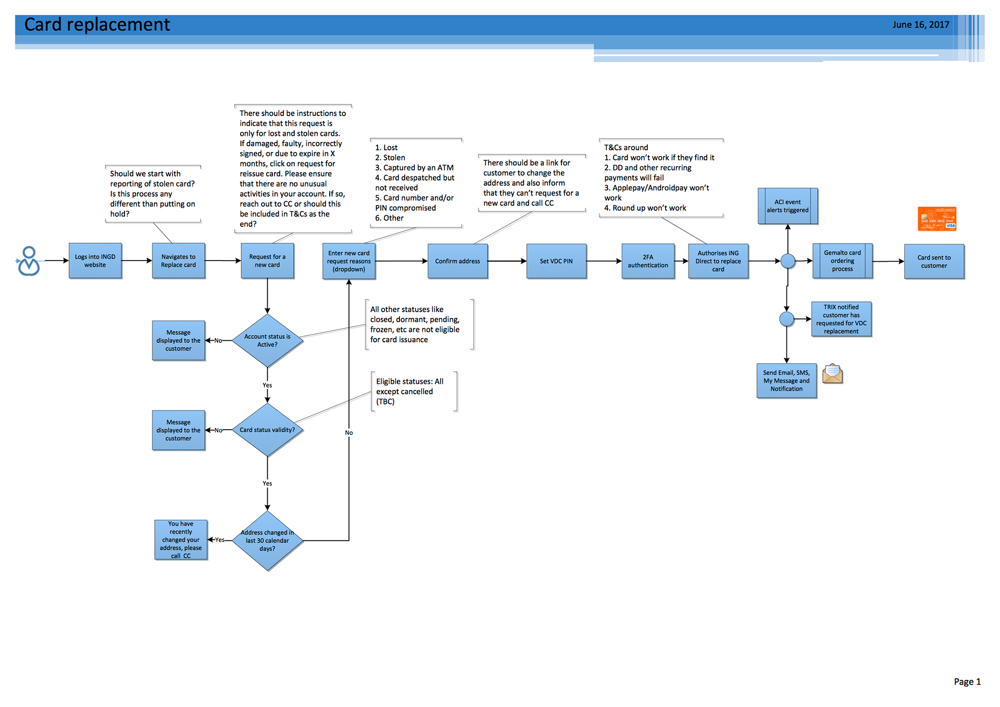
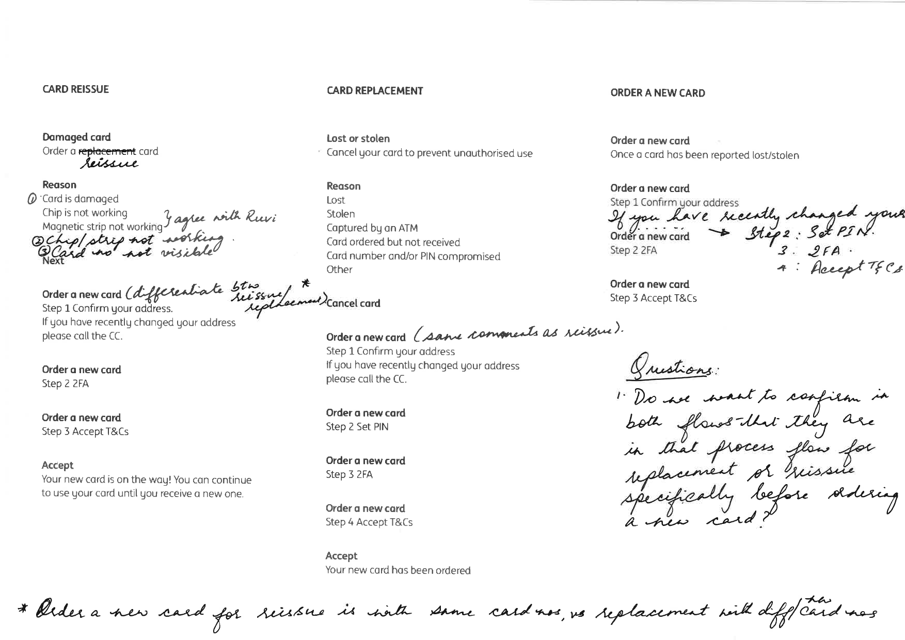
I mapped the existing manual replacement journey to identify 'stress points' where customers were forced into phone queues. This helped us isolate the business rules that could be digitized vs. those that required human intervention.

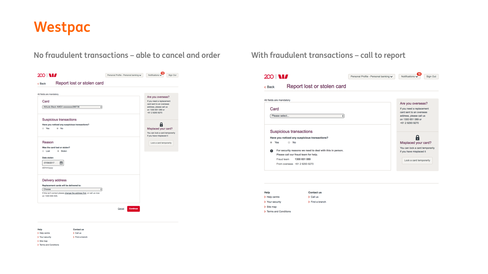
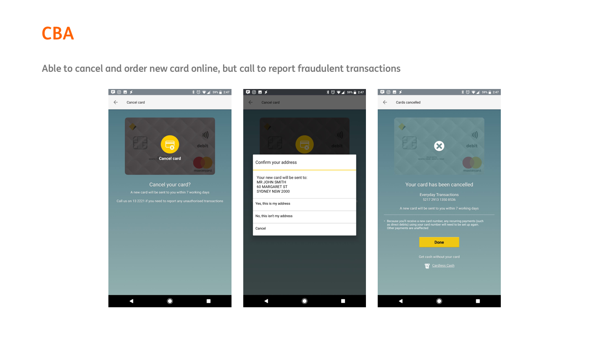
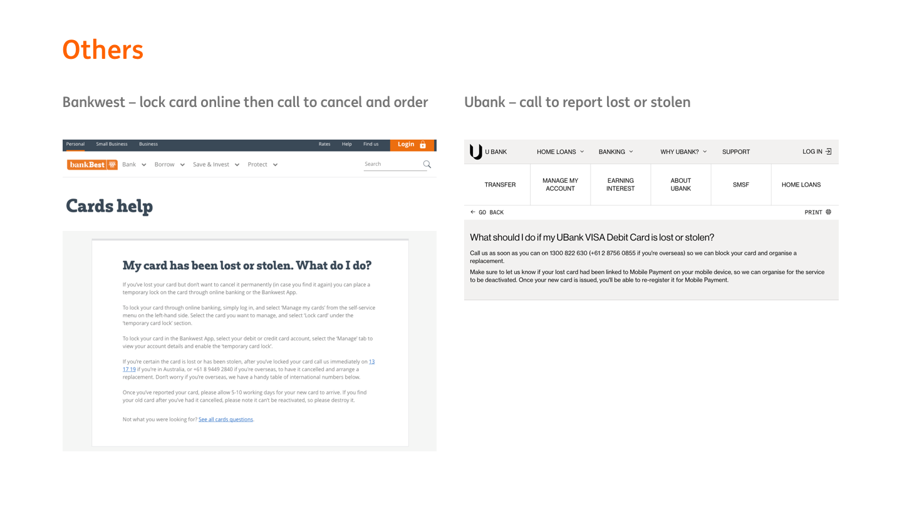
I conducted a landscape audit of major AU banks (CBA, Westpac, ANZ). While most handled simple replacements, I identified a gap in how they managed fraudulent transactions—leading to the 'Instant lock' feature in our MVP
The project required navigating complex security orchestration. I had to design around obfuscated data and 2FA token expiry that threatened to break the user flow mid-stream. I negotiated the technical logic with the architecture team to ensure the UI gracefully handled these security 'hand-offs,' preventing dead-ends for users who had recently changed addresses or failed a 2FA challenge.
Key design decisions:
- Progressive disclosure: Replaced a long-form submission with a guided step-by-step wizard for reporting, address confirmation, and new PIN setup.
- Fraud fork design: Introduced a dedicated fraud branch so customers could instantly lock their card before being routed to the specialist fraud team.
- Technical constraint handling: Reworked the progress indicator to absorb 2FA token expiry and re-prompt events without breaking user understanding.
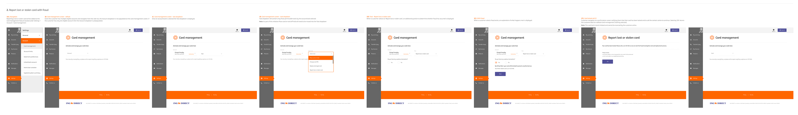
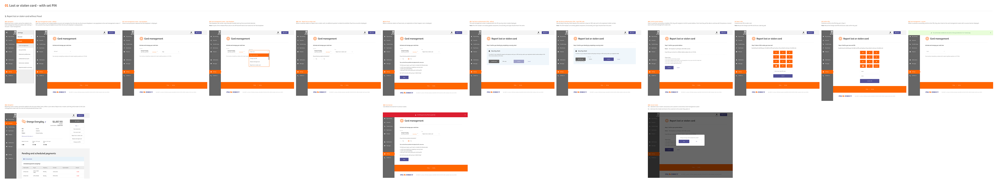
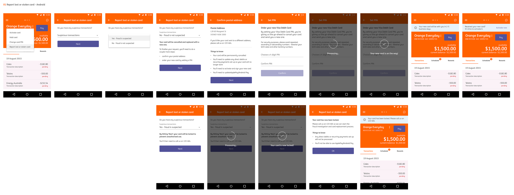
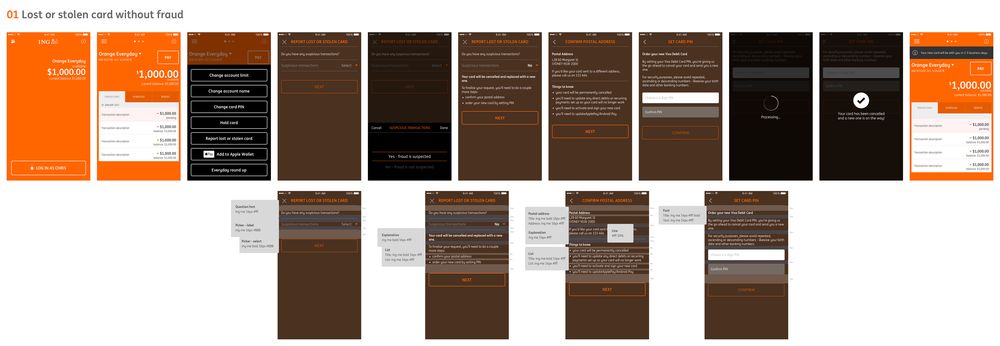
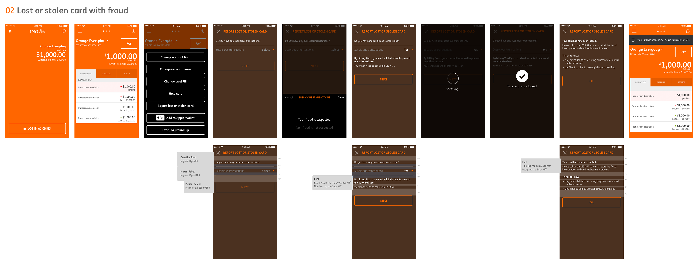
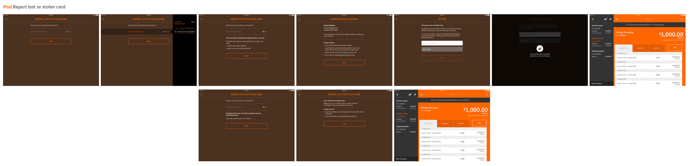
Results
Within seven days of the May 2018 launch, we saw an 81% success rate for digital reporting. After three months, self-service adoption scaled to 3,000 monthly reports, effectively shifting the primary behavior from phone to app. This didn't just save costs; it successfully offloaded 3% of the bank's total call drivers, allowing the contact center to focus on more complex fraud investigations.
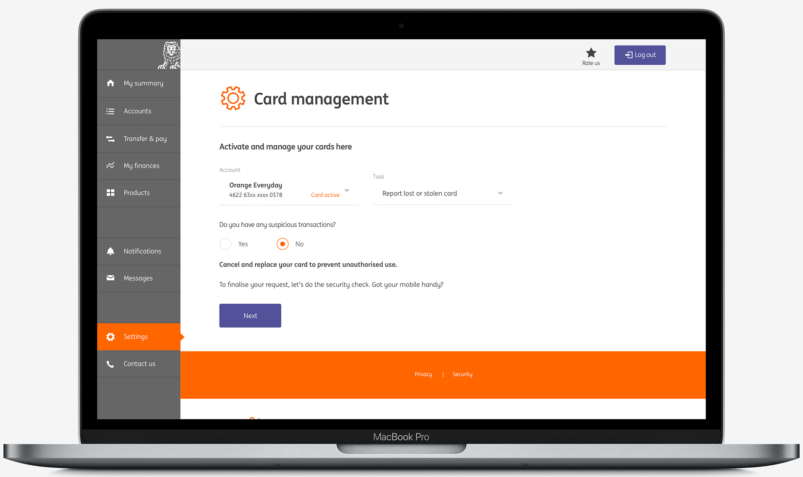
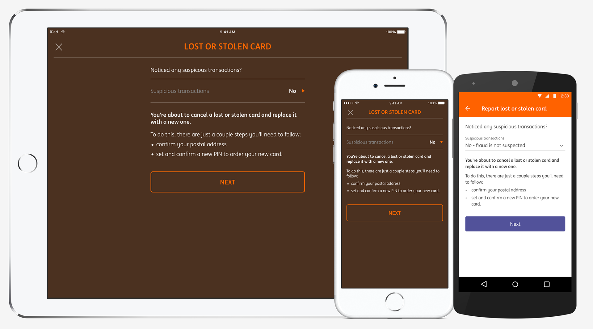
"Thanks to Ruvi also. The flow is straight forward and the conversion numbers seem to show this. Around 81% of customers who make it to the first step of card replacement complete the journey."